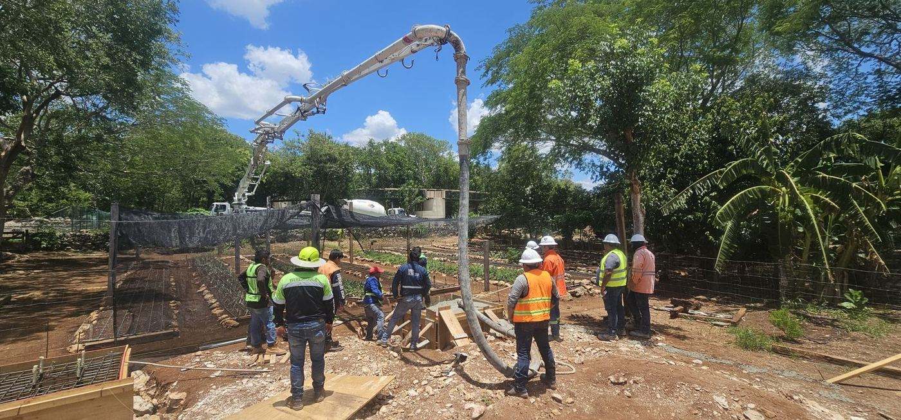
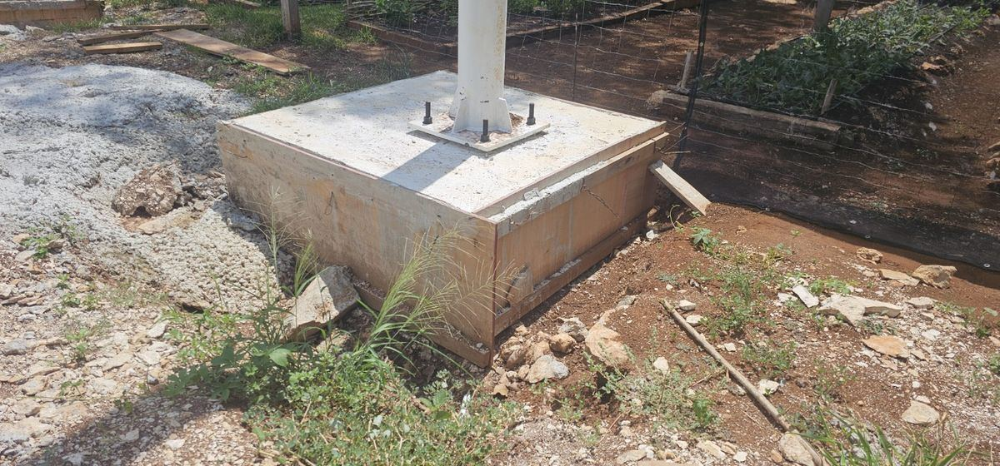
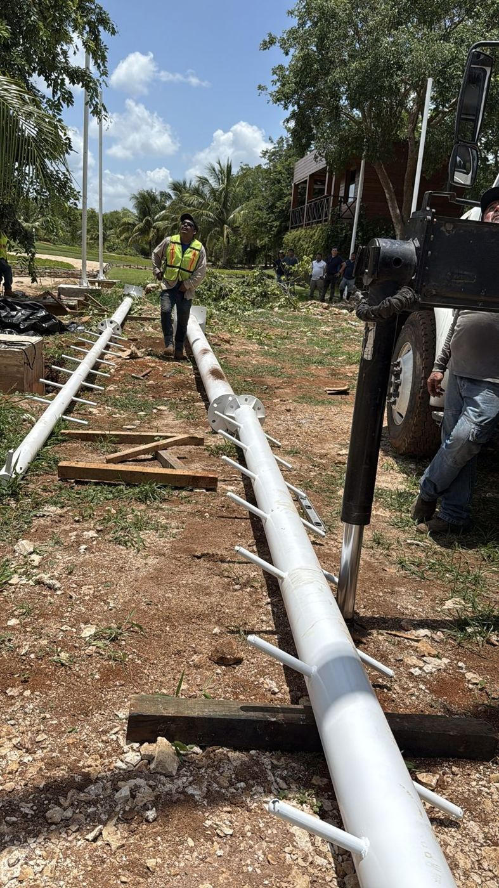
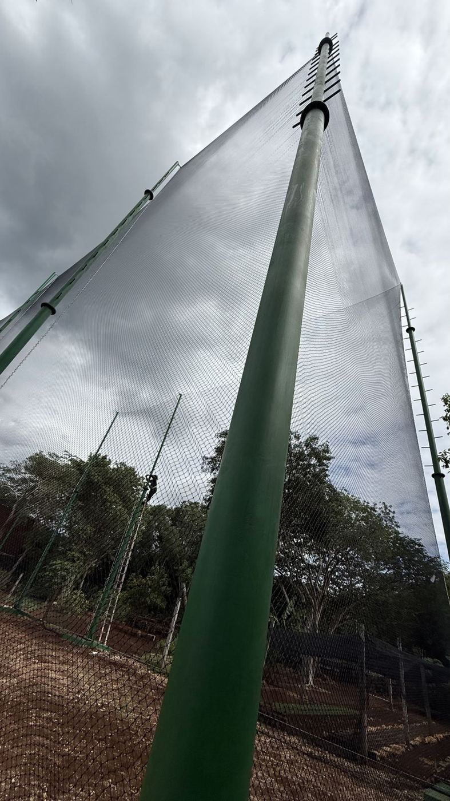
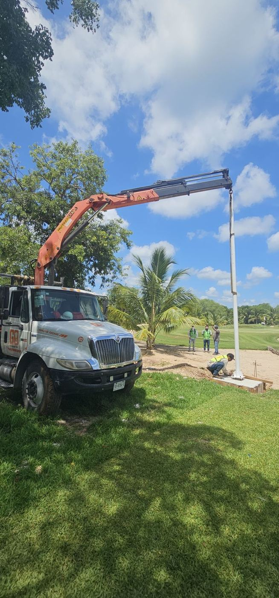

Una instalación económica comienza con una buena preparación. Antes de comprar la red o colocar los postes, conviene definir qué espacio quieres cubrir, dónde se sujetará y cómo llegará el equipo de instalación a los puntos de trabajo.
En esta guía comparto los aspectos que reviso al asesorar a nuestros clientes. El objetivo es aprovechar el presupuesto y evitar gastos por modificaciones que pudieron resolverse desde el principio.
1. Define qué necesitas cubrir
Primero identificamos el tipo de proyecto:
| Configuración | Qué incluye |
|---|---|
| Una sección | Un paño para cubrir un lado o área específica. |
| Un perímetro | Los lados que rodean el espacio, sin techo. |
| Una jaula | Cerramiento lateral y techo de red. |
| Varias secciones | Paños de diferentes medidas, alturas o funciones. |
Esta decisión influye en la cantidad de red, los apoyos y la instalación. Una jaula con techo necesita una planeación diferente a una sección vertical.
También debemos definir accesos, puertas y zonas que deben permanecer libres. Resolverlos antes de confeccionar los paños evita cortes y modificaciones posteriores.
2. Toma las medidas del espacio que realmente cubrirás
Necesitamos el largo y la altura de cada sección. Si habrá techo, también el largo y ancho de esa superficie, junto con la altura libre que debe conservarse debajo.

Cuando ya existe una estructura, recomiendo medirla directamente. Los planos sirven como referencia, pero pueden existir diferencias respecto a lo construido.
Si colocarás red sobre una malla ciclónica, distingue la altura total del cerramiento de la altura que corresponde únicamente a la red. También hay que prever cómo se resolverá la unión entre ambas para evitar huecos.
Un croquis sencillo y fotografías de esquinas, postes y accesos ayudan mucho a preparar la cotización.
3. Revisa dónde vas a sujetar la red
En un espacio que nunca ha tenido redes, primero hay que preparar sus apoyos.

La estructura debe responder a la altura, la separación entre postes, el tipo de paño y las condiciones del lugar. No solo soportará el peso de la red: también recibirá esfuerzos por viento, impactos y tensión de los elementos de soporte.
Por economía, suelo considerar postes de acero galvanizado, según la disponibilidad y las necesidades del proyecto. Sin embargo, el galvanizado es una protección del material; no define por sí solo la resistencia del poste.
Para seleccionar un tubo debemos conocer su diámetro, espesor de pared, altura libre, conexiones y cimentación. Dos postes del mismo diámetro pueden tener capacidades muy distintas.
Como experiencia de un proyecto particular, utilicé postes de cuatro pulgadas para una red de una pulgada a quince metros de altura. Ese antecedente no debe trasladarse automáticamente a otra cancha: cada estructura necesita evaluarse según sus condiciones.
4. Planea la separación entre postes
En nuestros proyectos suelo trabajar con separaciones aproximadas de 4.5 a 6 metros entre apoyos, sujetas a la revisión de la estructura y del paño. Esta referencia busca distribuir las cargas y controlar la caída de la red entre postes.

Cuando el tramo sin apoyo es grande, la línea superior puede formar una curva pronunciada. Esa caída, también llamada flecha, reduce la altura útil del cerramiento en el centro del tramo y afecta su apariencia.
La solución no consiste simplemente en tensar más. Aumentar la tensión también incrementa los esfuerzos sobre postes, anclajes y cimentaciones.
Por eso conviene definir juntos la separación, la altura y el sistema de soporte. La cantidad de postes debe responder al proyecto completo.
5. ¿Malla ciclónica o red perimetral?
Para muchas canchas recomiendo combinar ambas: malla ciclónica en la parte inferior y red perimetral para continuar la altura, cuando el uso y el diseño del espacio lo permitan.
La razón es práctica. Durante una jugada, una persona puede llegar hasta el límite de la cancha y golpear el cerramiento. Una red de contención de balones no debe asumirse como un sistema diseñado para detener jugadores.
La malla ciclónica inferior puede ofrecer un cerramiento más firme, pero también necesita una instalación adecuada: sin puntas expuestas, con remates seguros y con protección de postes cuando corresponda.
En la parte superior, la red permite plantear una solución que suele requerir menos material metálico que prolongar la malla ciclónica a toda la altura.
El ahorro depende del proyecto. Antes de elegir, debemos considerar el espacio de seguridad alrededor de la cancha, la estructura disponible y el costo completo de cada alternativa.
6. Prepara los puntos de sujeción y revisa el borde de la red
Recomiendo prever puntos de sujeción en la parte superior e inferior de los postes. En nuestras instalaciones utilizamos argollas abiertas o ganchos adecuados para facilitar la colocación, según el diseño.

En los postes intermedios, estos accesorios ayudan a presentar y sostener el borde del paño durante el montaje. El instalador debe revisar su acabado, orientación y forma de retención para evitar que la piola se salga o se dañe por roce.
También recomiendo solicitar la red confeccionada con piola perimetral. Este contorno ayuda a distribuir los esfuerzos en el borde y facilita la sujeción.
La colocación no termina con amarrar las cuatro esquinas. Según la longitud y las condiciones del proyecto, hacen falta apoyos intermedios y fijaciones adicionales para conservar la forma y cerrar los espacios previstos.
Antes del montaje, revisa que no haya rebabas, bordes cortantes o puntos de contacto que puedan deteriorar el cordón.
7. Evita el contacto directo entre el cable de acero y la red
En instalaciones que he revisado, he encontrado redes dañadas por el roce directo con cables de acero. Con el movimiento del paño, ese contacto puede desgastar los cordones hasta romperlos. Por eso no recomiendo pasar el cable directamente entre las mallas ni apoyar la red sobre él sin una solución que evite la fricción.
También he visto utilizar cable recubierto. En mi experiencia, el recubrimiento puede deteriorarse a la intemperie y dejar expuesto el metal. No conviene confiar únicamente en esa cubierta para proteger la red durante toda su vida útil.
¿Se puede utilizar cable de acero?
Sí, pero hay que resolver la conexión para mantener separados el cable y el tejido. Una técnica que he utilizado consiste en colocar conectores, como mosquetones adecuados, entre el cable y el borde reforzado con piola. Así se sostiene el paño sin que el cable roce directamente sus mallas.
Los conectores deben tener superficies lisas, sin rebabas ni bordes cortantes, y ser adecuados para las cargas y la exposición del proyecto. Necesitan una distribución que evite concentrar esfuerzos en pocos rombos y una revisión periódica de los puntos de contacto.
La alternativa que utilizo
En mis instalaciones suelo utilizar piola del mismo tipo que incorporo al contorno de la red. Me ha dado buenos resultados y permite evitar el contacto directo del tejido con el acero.
Esto no significa que cualquier cuerda pueda sustituir un cable de soporte. La elección depende del peso, la distancia entre apoyos, la tensión y las condiciones del lugar. En techos o tramos amplios también debemos considerar cuánto puede estirarse la piola y qué caída tendrá la red.
Revisa tanto la resistencia del soporte como su contacto con la red. Un elemento puede sostener el peso y deteriorar el tejido si la conexión no está bien resuelta.
8. Si habrá techo, prepara también la estructura de soporte
Cubrir una cancha con techo de red exige revisar la altura libre, los claros entre apoyos y el peso del paño.

Sin soporte suficiente, la red puede descender en el centro e interferir con el juego. Para controlar esa caída se utilizan elementos de soporte definidos para el proyecto. Si se elige cable de acero, debe mantenerse separado del tejido mediante una conexión adecuada, como expliqué en el apartado anterior.
Estos elementos transmiten esfuerzos a los postes. Si se tensan sin una estructura adecuada, pueden provocar que los apoyos se inclinen hacia el interior o fallen.
La cimentación es importante tanto para los laterales como para el techo; con elementos tensados, su revisión resulta especialmente relevante.
Antes de instalar, deben definirse los postes, sus bases, los anclajes y las conexiones. No conviene improvisar el techo después de construir un perímetro pensado únicamente para paños verticales.
9. Prepara el acceso para trabajar en altura
La altura, el terreno y el espacio disponible determinan qué equipo puede utilizarse.

| Equipo | Qué revisar antes de contratarlo |
|---|---|
| Escalera | Si la tarea permite trabajar con estabilidad, sin alcances laterales ni esfuerzos que comprometan el equilibrio. |
| Andamio | Terreno, nivelación, estabilización y espacio para montaje y desplazamiento. |
| Plataforma elevadora | Acceso, capacidad del suelo, obstáculos y alcance del equipo. |
Si se considera una grúa, debe definirse qué función tendrá. Izar material y elevar personas son operaciones diferentes; una grúa con canastilla requiere una evaluación específica y no debe improvisarse.
Antes del día de trabajo, despeja los accesos y confirma el ancho de las entradas. Revisa también cables eléctricos, árboles, obstáculos y áreas donde no pueda colocarse equipo.
Preparar estas condiciones evita pagar tiempo de renta mientras se resuelven problemas que pudieron identificarse antes.
10. Incluye la seguridad en el presupuesto
En México, la NOM-009-STPS-2011 contempla trabajos realizados a más de 1.80 metros sobre el nivel de referencia, además de riesgos de caída en aberturas.

La preparación debe incluir personal capacitado, revisión del equipo y análisis de riesgos. Según la tarea, se requieren casco, calzado adecuado y un sistema de protección contra caídas: arnés de cuerpo completo, conexiones compatibles y anclajes evaluados.
Delimita el área inferior, revisa riesgos eléctricos y suspende el trabajo ante condiciones inseguras o clima adverso. Prevé también un plan de emergencia y rescate.
Lista de preparación antes de instalar
- Configuración y medidas de cada sección.
- Abertura y confección de la red (consulta cómo elegir la abertura).
- Postes, cimentaciones y anclajes evaluados.
- Separación y puntos de apoyo definidos.
- Piola perimetral y accesorios de sujeción.
- Elementos de soporte definidos, si habrá techo.
- Separación del cable de acero y el tejido, cuando se utilice.
- Entradas, puertas y altura libre.
- Acceso y terreno adecuados para el equipo.
- Personal, protección y plan de trabajo preparados.
Con todo listo, el siguiente paso es el montaje: lo explico en cómo instalar una red perimetral paso a paso. Y si todavía estás comparando opciones, revisa cómo elegir una red perimetral.
En Redes Deportivas RC te ayudamos a revisar las medidas y condiciones de tu espacio para preparar la confección y la instalación. Comparte fotografías y un croquis de tu proyecto para identificar lo que necesitas antes de comenzar.